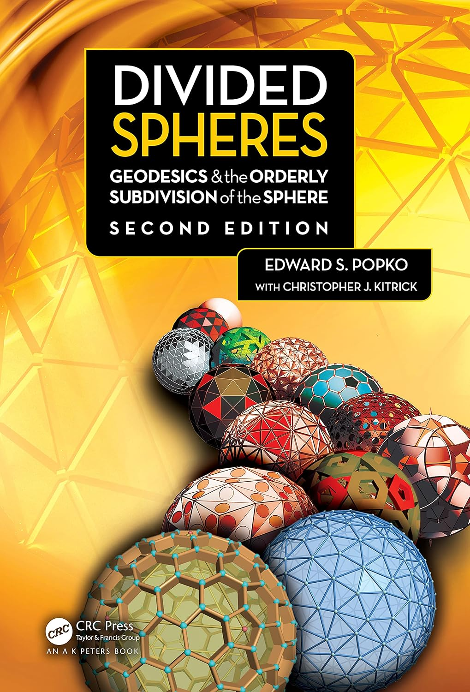

Geodesic domes were popularized during the 1960s and 1970s by Buckminster Fuller and his many advocates. They embodied both a futuristic aesthetic and remarkable structural efficiency, leading to applications ranging from modest dome homes to iconic structures such as Spaceship Earth at EPCOT and the United States Pavilion at Expo 67, now known as the Biosphere, in Montreal, Canada.
The icosahedron eventually became the dominant geometry used for geodesic dome construction. However, obtaining the detailed geometric information required for structural analysis, fabrication, and visualization was often difficult and time consuming.
As an exploratory project, I became curious whether modern AI could help recreate a geodesic design application similar to one I had written in FORTRAN during the 1970s.
To my surprise, it could.
In less than a day I had the beginnings of an application that already exceeded the capabilities of my original effort.
One thing led to another, and I soon found myself heading down the dome rabbit hole.
Along the way I discovered an entire world of dome and sphere geometries described in Edward S. Popko's excellent book Divided Spheres.
If you are interested in geodesic domes, polyhedra, and orderly sphere subdivisions, I highly recommend it.
DomeForge was heavily inspired by that work and represents my attempt to provide a generalized workbench for exploring, visualizing, and generating a wide variety of geometries that are suited, to varying degrees, to becoming domes.

Once a design has been created, DomeForge can generate a complete output folder containing:
These outputs can be used directly in third-party structural analysis, rendering, modeling, and graphics applications.
DomeForge began as an experiment and gradually grew into a passion project.
My hope is that it will be useful to dome builders, educators, students, architects, engineers, and anyone who enjoys exploring geometry.
Most importantly, have fun with it.
If you try DomeForge, I would love to hear what brought you here, whether it was helpful, and what improvements you would like to see in future versions.